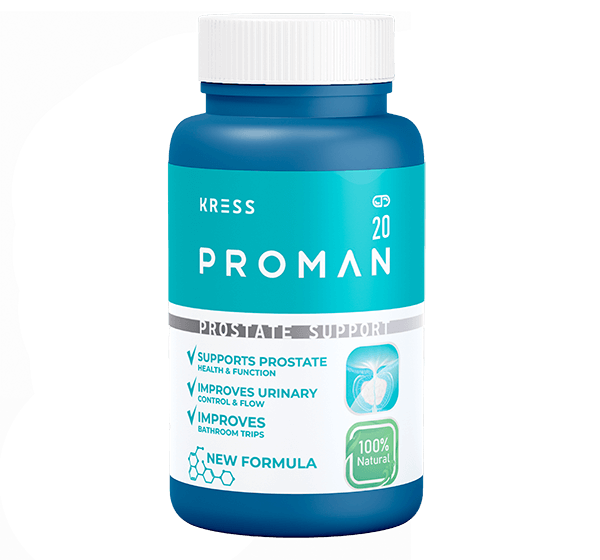

Article introduction
The problem often begins quietly
At first, it may feel like one extra trip to the bathroom. Then it becomes two. Then three. Soon, sleep is broken, mornings feel heavier, and the day starts with less energy than before.
Many men try to ignore it because the change feels small at the beginning. But when nighttime visits become a regular pattern, it can affect comfort, confidence, and daily routine.
Why it happens
Why many men notice these changes after 40
After 40, many men become more aware of prostate comfort. Small age-related changes may create pressure around the urinary tract, which can lead to frequent urges and more trips to the bathroom at night.
Age-related prostate changes
Pressure around the urinary tract
Frequent urges, especially at night
Interrupted sleep and low daytime energy

Dr. Rubén Sánchez
Men's Health Specialist
Expert view
What I have seen in men over 40
In my work with men over 40, one pattern appears again and again: many men wait too long before they take their comfort seriously. They may wake up once at night and think it is normal. Then the habit becomes stronger. They start planning their evenings around the bathroom, sleeping lighter, and waking up already tired.
The problem is not only the trip to the bathroom. It is the broken sleep, the frustration, and the quiet loss of confidence that follows. A man may still go to work, support his family, and keep his normal routine, but inside he knows something has changed.
This is why daily support matters. The goal is not to wait until discomfort controls your nights. The better approach is to support prostate health consistently, choose natural habits, and pay attention to the signals your body gives you.
When men start early, stay consistent, and use simple daily support, they often feel more in control of their routine. That sense of control is important. A peaceful night can change the way a man feels in the morning, how he works, and how confidently he moves through the day.
Common mistakes
What many men try first
These actions may hide the inconvenience temporarily, but they do not support prostate health.
Natural support
What can support prostate health naturally?
A natural prostate support formula is designed to be used regularly as part of a daily routine. The purpose is to support urinary comfort, help maintain prostate health, and make nighttime rest feel easier to protect.
The best approach is simple: consistent daily support, plant-based ingredients, and a focus on comfort rather than quick promises.
This is the approach behind Proman.
Support, not pressure
Proman is positioned for men who want a natural way to support prostate comfort after 40.

Meet Proman
Natural support for men's prostate health
Proman was created for men who want to support urinary comfort and maintain confidence in their daily routine after 40.
- Supports urinary comfort
- Helps maintain prostate health
- Made with natural plant extracts
How it works
How Proman supports men's health
Daily prostate support
Proman is taken as part of a regular routine to support prostate health after 40.
Urinary comfort
The formula is designed to help maintain comfort during the day and at night.
Better routine confidence
When nights feel calmer, mornings can feel more balanced and controlled.
A combination of plant extracts traditionally used to support prostate function.
Turmeric
Traditionally used to support natural comfort and balance.
Ginger
Known as a warming plant extract used in daily wellness routines.

Zinc
Supports normal men's health and everyday body function.

L-Arginine
Often used in men's wellness formulas for circulation support.
Official order
Start supporting your prostate health today
Proman is available through this page with delivery across Nigeria. Enter your details and a specialist will call to confirm your order.
- Cash on delivery
- Confidential order
- Delivery across Nigeria
- Natural plant-based formula
Special Nigeria Offer
Available for a limited time while supplies last.
Regular Price 99,000 NGN
TODAY 49,000 NGN
How to use
Simple daily use
Take 1 capsule and drink it with water.
Follow the usage instructions provided with the product and stay consistent with regular use.
Capsule
+Water
Customer experiences
What men in Nigeria say

"I used to wake up several times every night. Now I feel more rested in the morning."

"Ordering was simple. The specialist called, confirmed my details, and everything felt private."

"I wanted natural support after 40. Proman fits easily into my daily routine."

"I feel more comfortable during the day and more confident about my routine."

"The phone confirmation helped me understand the delivery process clearly."
Expectations
What to expect
Results vary from person to person. Regular use as directed is important.
Questions
FAQ
Is Proman natural?
Proman is made with natural plant extracts and nutrients selected for men's prostate support.
How do I use Proman?
Take 1 capsule and drink it with water. Follow the instructions provided with the product.
How long does delivery take?
Delivery time depends on your location. A specialist will confirm the details during the call.
Is it suitable for men over 40?
Proman is designed for men over 40 who want daily support for prostate comfort.
How soon can I expect results?
Results may vary from person to person. Many users notice improvements after regular use as directed.
Next step
Ready to take the next step?
Complete the official order form and wait for the confirmation call.